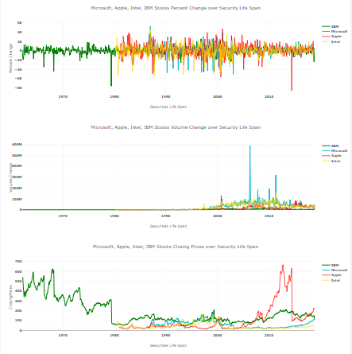
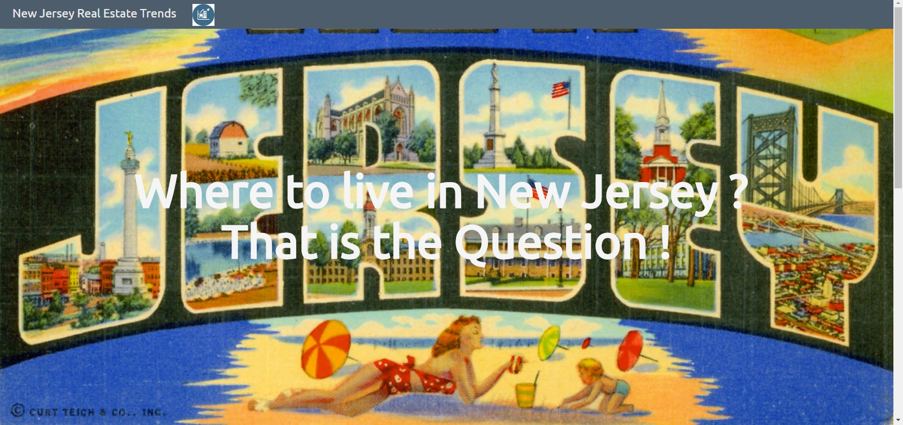
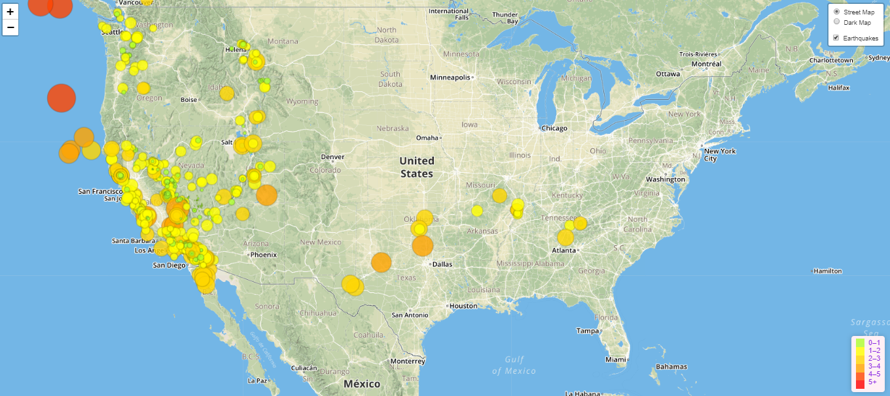
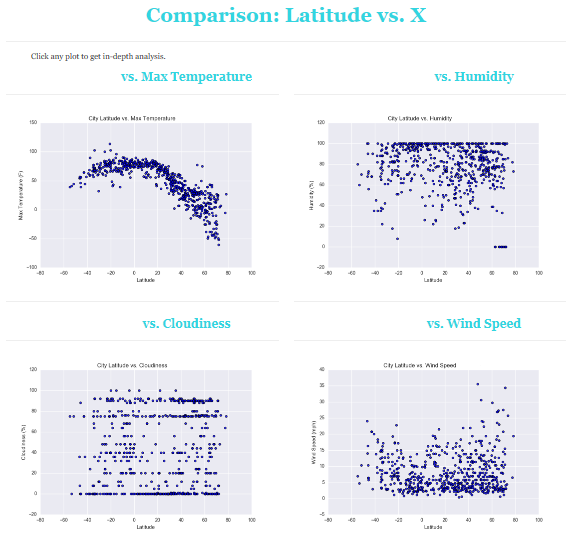

Data Science and Visualization • Database Developer and Systems Support Analyst
Diverse IT experience in financial, insurance and telecommunication industries
The snapshot of 4 popular technology stocks (IBM, Apple, Microsoft and Intel) that have been in the market for at least 30 years, data obtained through Quandl API. Full Stock App analyses data based on Stocks Monthly Percent Change, Volume Change, Closing Prices over Securities Life Span.
Click image
JavaScript
Plotly.js
Chart.js
Python
Jupyter Notebook
Flask
Pymongo
MongoDB
HTML/CSS
Heroku
Use Machine Learning to research New Jersey Real Estate Trends. This app helps those who want to live in NJ to find the right town, depending on their priorities. User weighs desired factors, gets the best place to live by zip code.
Click image
Python
Jupyter Notebook
Flask
Pandas
Scikit-Learn
K-means
Pickle
Json
Pymongo
MongoDB
JavaScript
D3/Bootsrap
HTML/CSS
Attom API
In the past seven days, where are the most instense Earthquakes occuring? This project utilizes JavaScript/Leaflet to pull records of various magnitude earthquakes in real time all over the world. Check the region you are interested in.
Click image
How does Latitude affect the weather ? This project is a Web Visualization Dashboard, which illustrates how temperature, humidity, cloudiness and wind speed vary depending on Latitude.
Click image
Python, SQL, R, VBA, JavaScript, HTML/CSS, XML, Unix shell scripting. Prior experience in Perl, C/C++
MySQL, MS SQL Server, Sybase, Oracle, Sqlite, MongoDB
Tableau, Machine Learning (Scikit-learn, Tensorflow), Jupyter Notebook, MySQL Workbench,
APIs, ORM, Visual Studio Code, Git, Advanced Excel (Pivot Tables), Heroku, AWS, Hadoop,
Advanced MS Excel(Dashboards, Pivot Tables), ETL Informatica, Autosys, Control M, sccs, sdb
Windows, Unix, Linux
Russian (bilingual)
I love spending time with my family, having guests over, enjoy art house movies, reading,
being outdoors, going to the theater, traveling, doing landscaping, playing chess
{kind=link}
{kind=link}